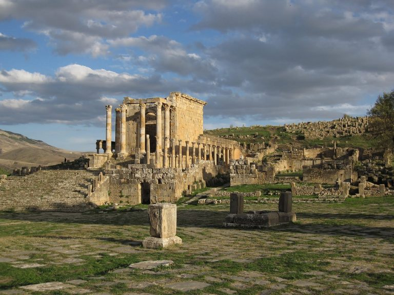
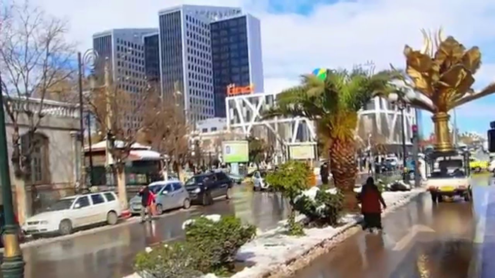
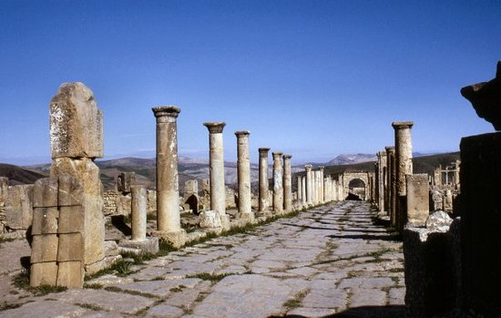

Another of Algeria’s cities which was founded by the Romans, Setif is situated in the Little Kabylie region of Algeria and is over 1,100 meters above sea level

The roman ruins here are well worth taking time to study. In addition to the Romans, the French have also left their mark on the city. Sights in the city include the main square with its Roman sculptures

Tourists are a fairly rare sight in this city which for some may be a reason to visit and see the ‘real Algeria’ far from the beaten track but it does have its disadvantages and western tourists should exercise caution.